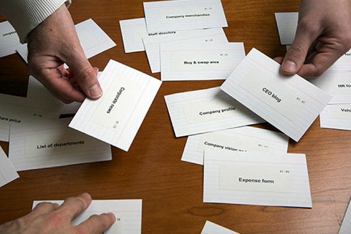
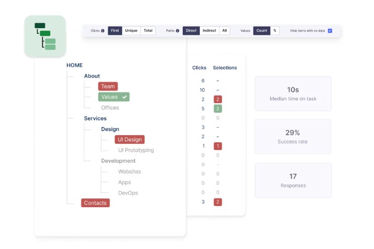
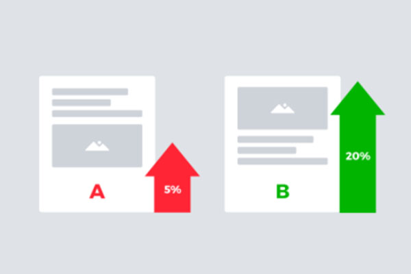

사용자 리서치 방법론 매트릭스
All
All
제품 개발/개선
정보구조 개선
신규 컨셉 개발
이해관계자 워크숍
에스노스라피
다이어리 스터디
사용자 인터뷰
맥락적 조사
사용성 테스트
프로토타이핑

카드 소팅(개방/패쇄형)

정보구조 검증(트리 테스트)
게릴라 리서치
콘텐츠 테스트
설문 조사

A/B 테스트
No results found
Search
Problem Check boxes
생소한 콘셉트임
이해관계자들이 동의하지 않음
CEO에게 아이디어가 있음
xxx는 왜 사용자들을 만족시키지 못하는가?
전환율은 왜 낮은가?
사용자는 누구인가
사용자를 알아야함
분석의 의미는
사용자들은 실제로 어떻게 생각하는가
여러가지 해결책들
사용자들은 xxx에 대해 어떻게 생각하는가
사용자들은 어떤 경험을 하고 있는가
새로 시작해야 함
작업 방식을 변경해야 함
조직이 사용자 중심적이지 않음
Close
Filters